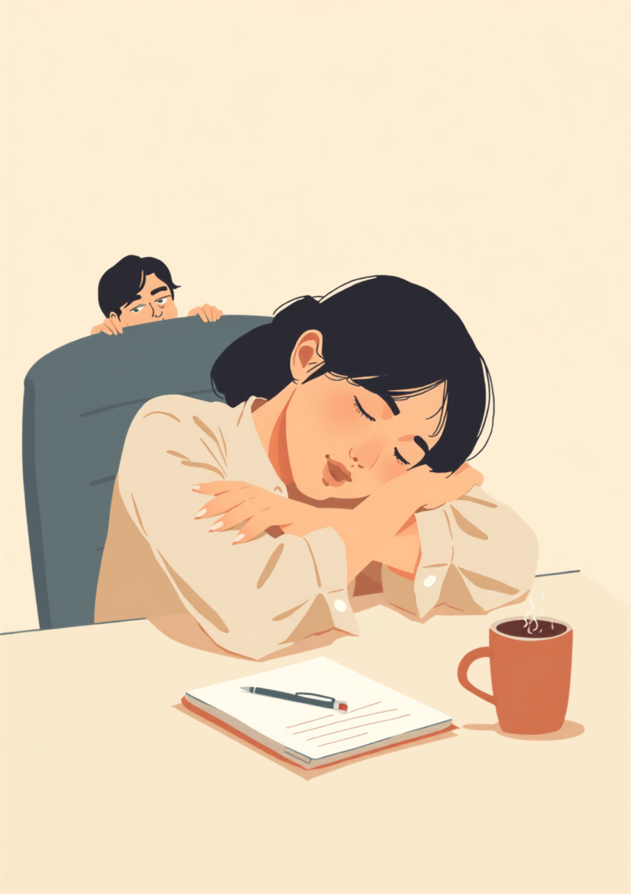
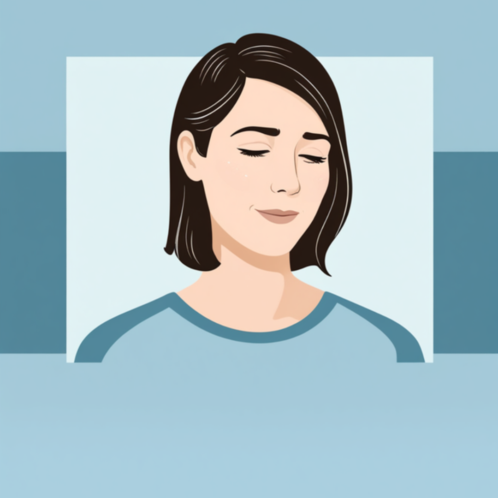

「また寝てたの?」その一言が、一番きつい
就労支援の現場で話を聞いていると、仕事中に眠ってしまうことに悩んでいる方は、実はそれなりにいます。ただ、そのしんどさが周囲にほとんど伝わっていないケースが多いという印象があります。「昨日ちゃんと寝た?」「また寝てたの?」という軽い一言のつもりの指摘が、本人にとっては何度も同じ説明を求められているようで、じわじわ削られていく感覚になるようです。
ナルコレプシーは、日本人ではおよそ600人に1人程度とされ、世界平均より高い有病率が指摘されている睡眠の病気です。代表的な症状は、場所や状況を問わず訪れる強い眠気で、会議中、商談中、食事中など、本人が最も眠ってはいけないと分かっている場面でこそ発症しやすいという厄介な特徴があります。「気合が足りない」のではなく、「気合ではどうにもならない」というのが実際に近いようです。
「新卒で入った会社の朝礼中、立ったまま寝落ちしたことがあって、後ろにいた先輩に肩を叩かれて起きたんです。完全に社会人失格みたいな空気になって、それから半年くらい『また寝てるよ、あいつ』って陰で言われてるのを知ってて、出社するのがめちゃくちゃ憂鬱でした。正直、自分でも『なんでこんな大事な場面で寝るんだよ』って毎回自分にキレてました。病院に行こうと思うまで、結局1年近くかかりました。」
「私の場合は特発性過眠症というやつで、ナルコレプシーとはちょっと違うらしいんですけど、症状は似たようなものです。会議の議事録係を任されたときに、気づいたらノートパソコンの前で船を漕いでいて、あとで同僚に『寝ながらでもタイピングしてたの面白かった』って笑い話にされたことがあります。笑ってもらえたのは正直救われたんですけど、上司には『やる気の問題では』って真顔で言われて、その温度差にどう反応していいか分からなくなりました。」
「甘え」でも「気合」でもなく、脳の中で起きていること
ナルコレプシーの原因ははっきりと解明されているわけではありませんが、近年の研究では、脳内で覚醒状態を保つ働きを持つオレキシンという物質の分泌量が低下していることが関わっていると考えられています。オレキシンを作る細胞の働きが弱まることで、本来なら起きていられるはずの場面でも、脳が眠りに引き込まれやすくなるとされています。
つまり、意志の力や集中力の問題というより、体の中の仕組みの問題である可能性が高いということです。ただ、この病気自体の認知度がまだ高くないため、職場では「サボり癖」「体調管理ができていない」という評価につながりやすく、本人がいくら「病気なんです」と言葉で説明しても、なかなか実感として理解されないという壁があります。
とはいえ、この天秤が世の中全体で自然に医学的事実の側に傾いてくれるのを待つのは現実的ではありません。次の章では、実際に職場でどう伝えていくかを考えてみます。

職場にどう伝える、伝えたあとに待っている変化
ナルコレプシーや過眠症は、まだ職場での認知度が高いとは言えません。だからこそ、いきなり症状を詳しく説明するより、業務にどう影響するか、何をしてもらえると助かるかという具体的な形で伝える方が、相手にも受け取りやすいとされています。
伝えるときに意識したいこと
- 「体調管理ができていない」ではなく「睡眠の病気の症状」であることを、できれば診断書とともに伝える
- 「いつ・どんな場面で眠気が強くなりやすいか」を具体的に共有する（例：長時間の会議、単調な作業中など）
- 「短時間の仮眠を挟めると助かる」など、業務上できる工夫を提案する
- 危険を伴う業務（運転や高所作業など）がある場合は、別の業務への調整を相談する
実際に伝えたあと、どう変わったのかは人それぞれです。すぐに配慮を得られる人もいれば、時間がかかる人、残念ながらあまり変わらない職場もあるようです。それでも、伝えたこと自体を後悔している方は少ない印象があります。
「診断書を持って上司に相談したとき、正直『病気だから仕方ないよね』で流されて終わるかと思ってたんですけど、意外と『午後の会議、寝落ちしやすい時間だよね、資料係じゃなくて聞く専門でいてもらう?』って役割を調整してくれたんです。3ヶ月くらい経った今も完全に眠気がなくなったわけじゃないですけど、責められる感じがなくなっただけで、だいぶ気持ちが楽になりました。」
診断までの迷いと、頼れる制度・相談先
「これって病気なのか、それとも自分の生活習慣の問題なのか」という迷いは、多くの方が通る道のようです。単なる寝不足との違いを自分で判断するのは難しく、受診をためらっているうちに数ヶ月、数年と時間が経ってしまうケースも珍しくありません。
受診の目安になりやすいサイン
- 十分な睡眠時間をとっているはずなのに、日中の眠気が続く
- 会議中や運転中など、眠ってはいけない場面でも眠気に抗えないことがある
- 笑ったときや驚いたときに、体の力がふっと抜けることがある（情動脱力発作）
- 夜間、何度も目が覚めてしまい、熟睡感が得られない
これらに心当たりがある場合は、睡眠を専門とする医療機関や、睡眠外来を設けている病院への相談が一つの選択肢です。診断には、終夜睡眠ポリグラフ検査や反復睡眠潜時検査などが用いられることが一般的とされています。
使える可能性がある制度
症状の程度や日常生活への影響によっては、精神障害者保健福祉手帳の対象になる場合があるとされています。該当するかどうかは個人差が大きいため、詳しくは主治医や自治体の障害福祉窓口にご確認ください（2026年7月時点の情報です）。手帳の取得は必須ではありませんが、障害者雇用枠での就職や、企業側の合理的配慮を前提にした働き方を選びやすくなる場合があります。
- 睡眠専門の医療機関（診断・治療方針の相談）
- 職場の産業医（50人以上の事業場に選任義務あり）
- 自治体の障害福祉窓口（手帳や制度についての相談）
- 就労移行支援事業所（体調管理を含めた働き方の相談）
よくある質問
mimemime代表。就労支援の現場経験をもとに、障がいのある方の働く不安に寄り添う記事を執筆。